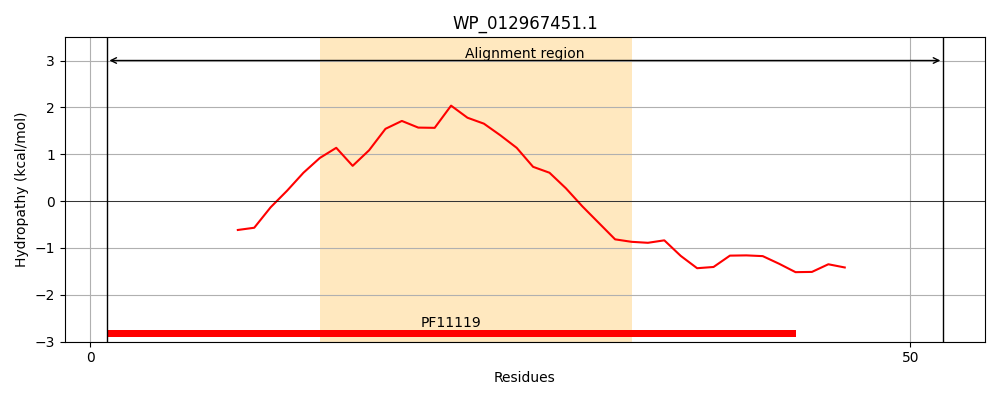
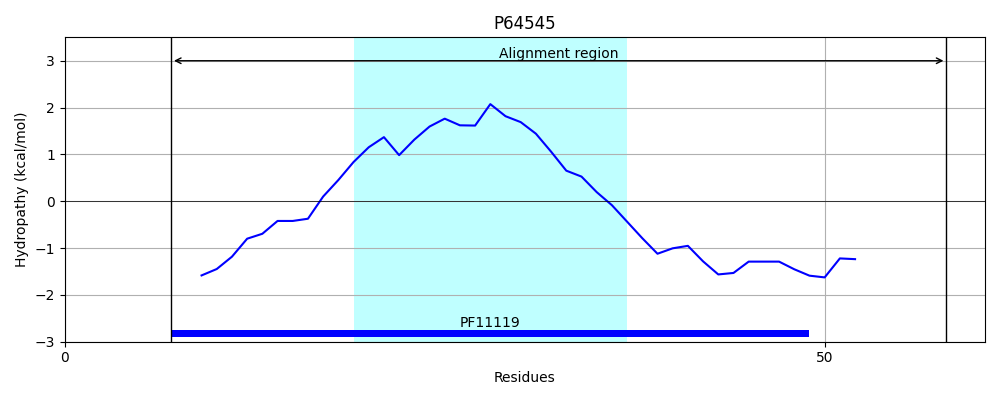

WP_012967451.1
Hit Accession: P64545
Hit TCID: 9.B.209.1.1
Hit Description: gnl|BL_ORD_ID|11205 gnl|TC-DB|P64545|9.B.209.1.1 Uncharacterized protein YfgG OS=Escherichia coli (strain K12) GN=yfgG PE=4 SV=1
Mach Len: 52
e:0.000000
Query TMS Count : 1
Hit TMS Count: 1
TMS-Overlap Score: 0.900000
Predicted Substrates:None
BLAST Alignment:
| Protein Hydropathy Plots: | |
|---|---|
|  |  |
Pairwise Alignment-Hydropathy Plot: | |
 | |